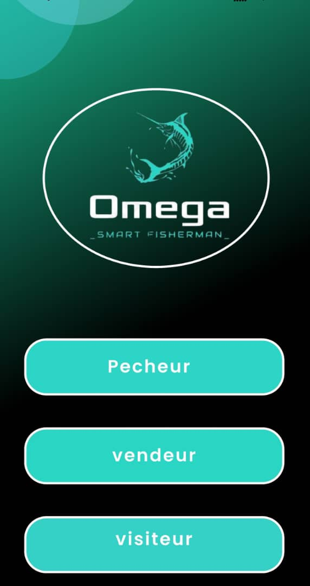

Community Connection
A mobile environment designed for fishermen, sellers and buyers.
Mobile Application · Fishing Community
A Flutter mobile application designed to connect fishermen, sellers and buyers, with location-related services and weather information.

OMEGA — Main mobile application screen
01 — Highlights
A mobile environment designed for fishermen, sellers and buyers.
Location and mapping capabilities as part of the application.
Weather information through the OpenWeather API.
A Flutter-based application experience.
02 — Links
The source code is available through my GitHub repositories.
03 — The Problem
Different participants in the fishing sector, including fishermen, sellers and buyers, can benefit from digital tools that make information and services easier to access.
OMEGA explores a mobile approach to connecting these users while incorporating location-related and weather information.
04 — Requirements
05 — My Role
My work focused on the development of the Flutter application and the integration of its supporting services, including Firebase, location-related capabilities and weather data.
06 — Technical Challenges
07 — Architecture & Choices
Flutter Mobile App
|
+-------+-------+
| |
v v
Firebase External APIs
|
OpenWeather API
|
Location Services
08 — Implementation Approach
09 — Results
OMEGA brought together a Flutter mobile interface, Firebase services, location-related functionality and weather API integration in a single project.
10 — Lessons Learned
11 — Interface